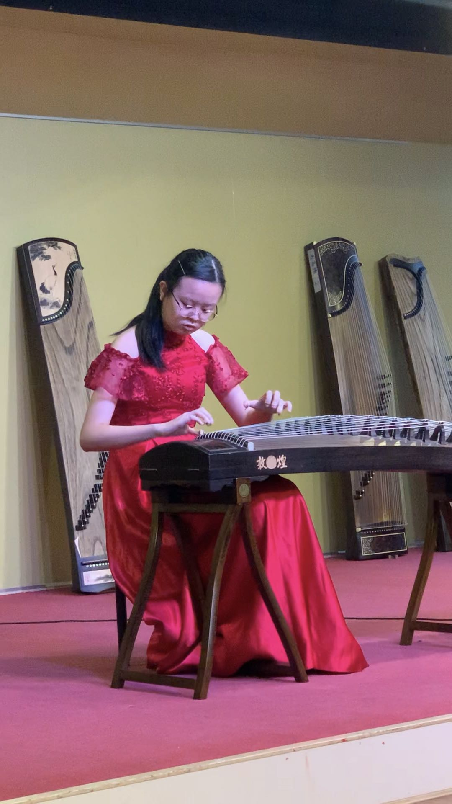

My name is Sarah Leong. I am a F4 student in Sacred Heart Canossian College (English Section). I
have been a member of the school handbell team for 4 years. This year, I am studying in the business
stream. I like playing guzheng and piano. I have be practicing piano for less than 4 years and guzheng
for 6 years. I’m also interested in economics and English. I have a plan about studying guzheng in
Beijing in the future. I would like to open a music tutorial company after that.